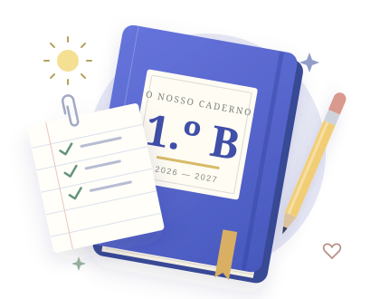

O horário, os testes, o almoço e os avisos do 1.º B. Tudo no mesmo caderno, sempre à mão.

— uma ajuda entre pais
Bem-vindo ao 1.º B
O seu número de telemóvel é a única chave de que precisa.
Só entram os números do grupo de WhatsApp do 1.º B. Não pedimos palavras-passe nem dados das crianças. Não recebeu o SMS? Fale com o Pedro no grupo.
A abrir…
O nosso ponto de encontro
Os dias de escola têm muito para lembrar.
Aqui, fica tudo no mesmo caderno.
— uma ajuda entre pais
Próximo dia de aulas
Uma foto ou duas linhas. E já ajudou a turma inteira.
Do colégio e do grupo
Sempre à mão
Agenda do 1.º B
Toque num dia e depois numa linha para ver mais: a ementa do almoço, os testes e o TPC.
Sempre por perto
● disponível · assistente de IA da turma
A Daniela é uma inteligência artificial: responde só com os dados desta página e diz de onde vem cada resposta. Se não souber, diz que não sabe.
Fique a par, à sua maneira
No grupo, no telemóvel ou no calendário. Escolha o que dá mais jeito.
No grupo de WhatsApp, às 18h00O resumo do dia seguinte aparece no grupo da turma. Não precisa de fazer nada.
Esta página no ecrã principalNo iPhone: botão Partilhar e «Adicionar ao ecrã principal». No Android: menu ⋮ e «Adicionar ao ecrã principal». Fica como uma app.
No calendário do telemóvelTestes, feriados e avisos com data, sempre atualizados.
Para partilhar o TPC ou corrigir alguma coisa, fale com o Pedro no grupo.
Um espaço de confiança
Uma ajuda entre pais começa por cuidar do que é de cada família.
Feito por Pedro Febrero, pai da Leia do 1.º B. Não é um canal oficial do colégio nem substitui as comunicações do colégio e do Inovar. Para os pais não custa nada.